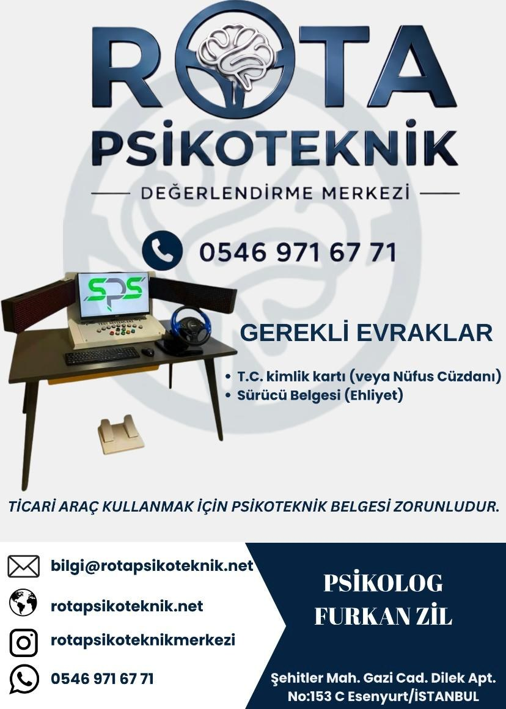

Başvurudan sonuca kadar psikoteknik değerlendirme sürecinin tüm aşamaları.
Merkezimizde uygulanan psikoteknik değerlendirme süreci, aşağıdaki adımlar çerçevesinde yürütülmektedir.
Kimlik belgesi ve sürücü belgesi bilgileri alınarak başvuru kaydı oluşturulur. Gerekli evraklar teslim edilir.
Dikkat, algı, refleks, koordinasyon, muhakeme ve psikomotor becerileri ölçen testler bilgisayar ve cihaz destekli olarak uygulanır.
Test sonuçları, yetkili psikolog tarafından ilgili mevzuat hükümleri çerçevesinde değerlendirilir ve rapor düzenlenir.
Değerlendirme sonucu ve süreç hakkında kişiye detaylı bilgi verilir. Psikiyatri onayı ardından kişinin belgesi e-devlete otomatik yüklenmiş olur..

Süre
Ortalama 1–2 Saat
Tüm süreç dahil değerlendirme süresi.
Psikoteknik değerlendirme başvurusunda bulunmadan önce aşağıdaki belgeleri hazır bulundurmanız gerekmektedir.
📌 Gerekli belgeler hakkında tereddütünüz varsa başvurmadan önce merkezimizi arayarak bilgi alabilirsiniz.

Belgelerinizi hazırlayın, telefon veya WhatsApp üzerinden randevunuzu oluşturun.
Değerlendirme öncesi ve sonrasında konforlu bekleme alanımızda dinlenebilirsiniz.